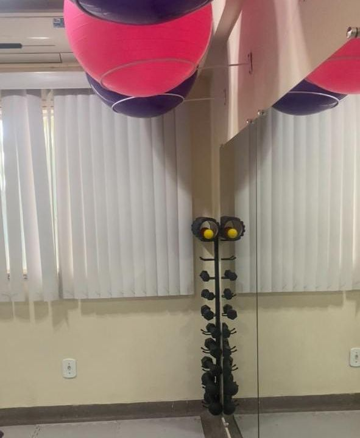

Liberdade para
se movimentar
Mobilidade e flexibilidade como parte de uma rotina mais ativa e consciente.
MOVIMENTO & BEM-ESTAR EM ITABORAÍ
Um olhar atento para você. Fisioterapia, Pilates e cuidado individualizado para viver cada movimento com mais presença.
Cuidado profissional.
No seu tempo, para o seu corpo.
MOVIMENTO COM PROPÓSITO
Fisioterapia✳Pilates✳RPG✳Bem-estar01 / CORPO, MENTE E ROTINA
Mais atenção à forma como você se move, dentro e fora da clínica. O cuidado começa ao perceber o seu próprio corpo.
Mobilidade e flexibilidade como parte de uma rotina mais ativa e consciente.
Um convite a desenvolver consciência corporal, postura e controle do movimento.
Força, coordenação e bem-estar, respeitando suas necessidades e possibilidades.

DETALHES DO NOSSO ESPAÇO · ITABORAÍ, RJ02 / BEM-VINDO À ESPAÇO R
Acreditamos que cuidar do movimento é também cuidar da vida. Por isso, reunimos fisioterapia, Pilates e bem-estar em um ambiente de atenção e acolhimento.
Aqui, cada pessoa tem sua história, seu ritmo e suas necessidades. Nossa proposta é escutar, orientar e construir uma experiência de cuidado que faça sentido para você.
Clínica Espaço R
FISIOTERAPIA, RPG E ESTÉTICA
03 / NOSSO JEITO DE CUIDAR
Seu cuidado começa com uma conversa. Conheça o que valorizamos no acompanhamento.
Conhecer sua rotina, suas expectativas e o que levou você até aqui.
Conversar sobre suas necessidades e as possibilidades de atendimento.
Respeitar seu ritmo e a singularidade de cada movimento.
Valorizar a atenção profissional ao longo da sua experiência.
04 / POSSIBILIDADES DE CUIDADO
Conheça nossos serviços. A equipe orienta sobre a indicação e a disponibilidade de cada atendimento.
Um encontro com o seu corpo, com atenção à força, à mobilidade e ao controle de cada movimento.
Conhecer as aulasAtenção à funcionalidade e às necessidades de movimento, com orientação profissional.
Reeducação Postural Global e um olhar individual para o cuidado com a postura.
Momentos de autocuidado com atendimentos que respeitam suas necessidades.
Consulte a equipe sobre indicação, profissionais responsáveis e disponibilidade.
05 / PORTAS ABERTAS PARA VOCÊ
Imagens da clínica disponíveis em seu cadastro público na TotalPass. Conheça as novidades no Instagram.
06 / CONFIANÇA SE CONSTRÓI
Cada experiência de cuidado é única. Conheça os relatos compartilhados por quem já passou pelo Espaço R, diretamente no nosso perfil do Google.
Conhecer as avaliaçõesO próximo capítulo
pode ser o seu.
07 / VAMOS COMEÇAR?
Conte o que você procura e tire suas dúvidas com a nossa equipe.
Consulte os horários e as opções de visita, aula ou avaliação disponíveis.
Conheça o espaço e dê início ao seu acompanhamento profissional.
UM TEMPO PARA VOCÊ
Estamos aqui para acolher suas dúvidas e ajudar você a encontrar o seu caminho de cuidado.
Converse com a nossa equipe08 / ANTES DO PRIMEIRO PASSO
Uma boa conversa também
faz parte do cuidado.
Converse com a equipe pelo WhatsApp ou pelo Instagram. Informe o atendimento que procura e sua disponibilidade para consultar as opções de agendamento.
Conte à equipe se será sua primeira experiência. Ela pode orientar você sobre como começar e sobre a necessidade de uma avaliação inicial.
Entre os serviços divulgados pela clínica estão fisioterapia, RPG, Pilates, estética e massagens. Consulte a seção de modalidades e converse com a equipe sobre indicação e disponibilidade.
O atendimento é realizado mediante agendamento. Horários, valores e formatos de aula devem ser confirmados diretamente com a equipe, conforme a modalidade desejada.
Informe sua necessidade no primeiro contato. A equipe esclarece o procedimento adequado para iniciar o acompanhamento e se uma avaliação é necessária para o atendimento solicitado.
Estamos no Centro de Itaboraí, RJ. Utilize o link oficial do Google Maps na seção de localização e confirme com a equipe o endereço antes da sua visita.
09 / ESPERAMOS POR VOCÊ
Atendimento mediante agendamento.
Consulte a disponibilidade com a equipe.